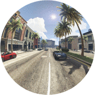

|
|
A comparative study of semantic segmentation of omnidirectional images from a motorcycle perspective
Ahmed Rida Sekkat,
Yohan Dupuis,
Paul Honeine,
Pascal Vasseur.
Scientific Reports 12, 4968 (2022).
|
|
Abstract: The semantic segmentation of omnidirectional urban driving images is a research topic that has increasingly attracted the
attention of researchers, because the use of such images in driving scenes is highly relevant. However, the case of motorized
two-wheelers has not been treated yet. Since the dynamics of these vehicles are very different from those of cars, we focus
our study on images acquired using a motorcycle. This paper provides a thorough comparative study to show how different
deep learning approaches handle omnidirectional images with different representations, including perspective, equirectangular,
spherical, and fisheye, and presents the best solution to segment road scene omnidirectional images. We use in this study real
perspective images, and synthetic perspective, fisheye and equirectangular images, simulated fisheye images, as well as a test
set of real fisheye images. By analyzing both qualitative and quantitative results, the conclusions of this study are multiple, as
it helps understand how the networks learn to deal with omnidirectional distortions. Our main findings are that models with
planar convolutions give better results than the ones with spherical convolutions, and that models trained on omnidirectional
representations transfer better to standard perspective images than vice versa.
|
[Paper]
[HTML]
[PDF]
|
|
|
|
SynWoodScape: Synthetic Surround-view Fisheye Camera Dataset for Autonomous Driving
Ahmed Rida Sekkat,
Yohan Dupuis,
Varun Ravi Kumar,
Hazem Rashed,
Senthil Yogamani,
Pascal Vasseur,
Paul Honeine.
arXiv preprint arXiv:2203.05056, 2022/3/9, (under review).
|
|
Abstract: Surround-view cameras are a primary sensor for
automated driving, used for near field perception. It is one
of the most commonly used sensors in commercial vehicles.
Four fisheye cameras with a 190° field of view cover the 360°
around the vehicle. Due to its high radial distortion, the standard
algorithms do not extend easily. Previously, we released the first
public fisheye surround-view dataset named WoodScape. In this
work, we release a synthetic version of the surround-view dataset,
covering many of its weaknesses and extending it. Firstly, it is
not possible to obtain ground truth for pixel-wise optical flow
and depth. Secondly, WoodScape did not have all four cameras
simultaneously in order to sample diverse frames. However, this
means that multi-camera algorithms cannot be designed, which
is enabled in the new dataset. We implemented surround-view
fisheye geometric projections in CARLA Simulator matching
WoodScape’s configuration and created SynWoodScape. We release
80k images from the synthetic dataset with annotations
for 10+ tasks. We also release the baseline code and supporting scripts.
|
[Paper]
|
|
|
|
A comparative study of semantic segmentation using omnidirectional images
Ahmed Rida Sekkat,
Yohan Dupuis,
Paul Honeine,
Pascal Vasseur.
Congrès Reconnaissance des Formes, Image, Apprentissage et Perception (RFIAP 2020), Vannes, Bretagne, France, 23 - 26 June 2020.
|
|
Abstract: The semantic segmentation of omnidirectional urban driving images is a research
topic that has increasingly attracted the attention of researchers. This paper presents a thorough comparative
study of different neural network models trained on four different representations: perspective,
equirectangular, spherical and fisheye. We use in this study real perspective images, and synthetic
perspective, fisheye and equirectangular images, as well as a test set of real fisheye images.
We evaluate the performance of convolution on spherical images and perspective images.
The conclusions obtained by analyzing the results of this study are multiple and help understanding
how different networks learn to deal with omnidirectional distortions. Our main finding is that models
trained on omnidirectional images are robust against modality changes and are able to learn a universal
representation, giving good results in both perspective and omnidirectional images. The relevance of all
results is examined with an analysis of quantitative measures.
|
[Paper]
|
|
|
|
The OmniScape Dataset
Ahmed Rida Sekkat,
Yohan Dupuis,
Pascal Vasseur,
Paul Honeine.
IEEE International Conference on Robotics and Automation (ICRA), 2020.
|
|
Abstract: Despite the utility and benefits of omnidirectional images in robotics and automotive applications, there are no datasets
of omnidirectional images available with semantic segmentation, depth map, and dynamic properties. This is due to the time cost and human effort required
to annotate ground truth images. This paper presents a framework for generating omnidirectional images using images that are acquired from a virtual
environment. For this purpose, we demonstrate the relevance of the proposed framework on two well-known simulators: CARLA simulator, which is an
open-source simulator for autonomous driving research, and Grand Theft Auto V (GTA V), which is a very high quality video game. We explain in details
the generated OmniScape dataset, which includes stereo fisheye and catadioptric images acquired from the two front sides of a motorcycle, including
semantic segmentation, depth map, intrinsic parameters of the cameras and the dynamic parameters of the motorcycle. It is worth noting that the case
of two-wheeled vehicles is more challenging than cars due to the specific dynamic of these vehicles.
|
[Paper]
[Presentation]
[GitHub]
[Demos]
[Project]
|
|
|

|
Génération d'images omnidirectionnelles à partir d'un environnement virtuel
Ahmed Rida Sekkat,
Yohan Dupuis,
Pascal Vasseur,
Paul Honeine.
GRETSI, 2019 27-ème Colloque GRETSI sur le Traitement du Signal et des Images, Aug 2019, Lille, France.
|
|
Abstract: This paper describes a method for generating omnidirectional images using cubemap images and corresponding
depth maps that can be acquired from a virtual environment. For this purpose, we use the video game Grand Theft Auto V (GTA V). GTA V
has been used as a data source in many research projects, due to the fact that it is a hyperrealist open-world game that simulates a
real city. We take advantage of developments made in reverse engineering this game, in order to extract realistic images and corresponding
depth maps using virtual cameras with 6DoF. By combining the extracted information with an omnidirectional camera model, we generate Fish-eye
images intended for instance to machine learning based applications.
|
[Paper]
[Poster]
|
|

|
Input to MV-HEVC LHEVCFF conformance
Jean Le Feuvre,
Ahmed Rida Sekkat.
MPEG, Chengdu, China, October 2016, n° m39261.
|
|
MPEG standardization contribution: This contribution proposes a set of files for conformance for the Layered HEVC File Format for MV-HEVC bitstreams.
|
[Paper]
|
|

|
TPT-Dance&Actions : un corpus multimodal d’activités humaines
Aymeric Masurelle,
Ahmed Rida Sekkat,
Slim Essid,
Gaël Richard.
Traitement du Signal 32 (2015): 443-475.
|
|
Abstract: We present a new multimodal database of human activities, TPT - Dance & Actions, for research in multimodal scene analysis and understanding.
This corpus focuses on dance scenes (lindy hop, salsa and classical dance), fitness and isolated sequences. 20 dancers and 16 participants were recorded performing respectively 14
dance choreographies and 13 sequences of other human activities. These different multimodal scenes have been captured through a variety of media modalities, including video cameras,
depth sensors, microphones, piezoelectric transducers and wearable inertial devices (accelerometers, gyroscopes et magnetometers).
|
[Paper]
|
|
|